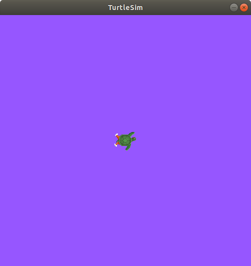

Understanding ROS 2 parameters¶
Goal: Learn how to get, set, save and reload parameters in ROS 2.
Tutorial level: Beginner
Time: 5 minutes
Contents
Background¶
A parameter is a configuration value of a node. You can think of parameters as node settings. A node can store parameters as integers, floats, booleans, strings and lists. In ROS 2, each node maintains its own parameters. All parameters are dynamically reconfigurable, and built off of ROS 2 services.
Prerequisites¶
This tutorial uses the turtlesim package.
As always, don’t forget to source ROS 2 in every new terminal you open.
Tasks¶
1 Setup¶
Start up the two turtlesim nodes, /turtlesim and /teleop_turtle.
Open a new terminal and run:
ros2 run turtlesim turtlesim_node
Open another terminal and run:
ros2 run turtlesim turtle_teleop_key
2 ros2 param list¶
To see the parameters belonging to your nodes, open a new terminal and enter the command:
ros2 param list
You will see the node subnamespaces, /teleop_turtle and /turtlesim, followed by each node’s parameters:
/teleop_turtle:
scale_angular
scale_linear
use_sim_time
/turtlesim:
background_b
background_g
background_r
use_sim_time
Every node has the parameter use_sim_time; it’s not unique to turtlesim.
Based on their names, it looks like /turtlesim’s parameters determine the background color of the turtlesim window using RGB color values.
To be certain of a parameter type, you can use ros2 param get.
3 ros2 param get¶
To get the current value of a parameter, use the command:
ros2 param get <node_name> <parameter_name>
Let’s find out the current value of /turtlesim’s parameter background_g:
ros2 param get /turtlesim background_g
Which will return the value:
Integer value is: 86
Now you know background_g holds an integer value.
If you run the same command on background_r and background_b, you will get the values 255 and 69, respectively.
4 ros2 param set¶
To change a parameter’s value at runtime, use the command:
ros2 param set <node_name> <parameter_name> <value>
Let’s change /turtlesim’s background color:
ros2 param set /turtlesim background_r 150
Your terminal should return the message:
Set parameter successful
And the background of your turtlesim window should change colors:

Setting parameters with the set command will only change them in your current session, not permanently.
However, you can save your settings changes and reload them next time you start a node.
4 ros2 param dump¶
You can “dump” all of a node’s current parameter values into a file to save for later using the command:
ros2 param dump <node_name>
To save your current configuration of /turtlesim’s parameters, enter the command:
ros2 param dump /turtlesim
Your terminal will return the message:
Saving to: ./turtlesim.yaml
You will find a new file in the directory your workspace is running in. If you open this file, you’ll see the following contents:
turtlesim:
ros__parameters:
background_b: 255
background_g: 86
background_r: 150
use_sim_time: false
Dumping parameters comes in handy if you want to reload the node with the same parameters in the future.
4 Load parameter file¶
To start the same node using your saved parameter values, use:
ros2 run <package_name> <executable_name> --ros-args --params-file <file_name>
This is the same command you always use to start turtlesim, with the added flags --ros-args and --params-file, followed by the file you want to load.
Stop your running turtlesim node so you can try reloading it with your saved parameters, using:
ros2 run turtlesim turtlesim_node --ros-args --params-file ./turtlesim.yaml
The turtlesim window should appear as usual, but with the purple background you set earlier.
Summary¶
Nodes have parameters to define their default configuration values.
You can get and set parameter values from the command line.
You can also save parameter settings to reload in a new session.
Next steps¶
Jumping back to ROS 2 communication methods, in the next tutorial you’ll learn about actions.